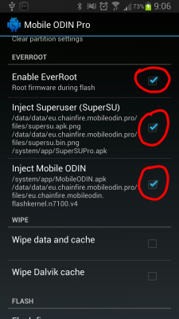

1)
Скачиваем любую однофайловую прошивку (Формат
прошивки- .tar или .tar.md5)
2) Закидываем на телефон файл прошивки формата .tar или .tar.md5 (Он находится в архиве со скачанной ранее прошивкой (П.1), желательно положить данный файл в одну папку на смартфоне, назовём её "Firmware" без кавычек и расположим в корневой директории накопителя или карты памяти)
2) Закидываем на телефон файл прошивки формата .tar или .tar.md5 (Он находится в архиве со скачанной ранее прошивкой (П.1), желательно положить данный файл в одну папку на смартфоне, назовём её "Firmware" без кавычек и расположим в корневой директории накопителя или карты памяти)
3)
Скачиваем и устанавливаем программу Mobile Odin Pro
После открытия программы, она доустанавливает еще одно
.apk в зависимости от вашего устройства.
Если у вас не скачивается дополнительный файл, установите его вручную, версию для вашего девайса брать на XDA.
Если у вас не скачивается дополнительный файл, установите его вручную, версию для вашего девайса брать на XDA.
3)
Открываем Mobile Odin Pro
4)
В Mobile Odin Pro выбираем пункт Open file ...


6)
В появившемся окне выбираем ранее записанный файл формата .tar или
.tar.md5 (Который мы записывали в созданную нами папку "Firmware" в
пункте 2. Его содержимое подставляется в соответствующие разделы
программы )
7)
Наимаем клавишу подтверждения "ОК".
8)
Проверяем, во всех ли разделах есть данные.
*9)
ОПЦИОНАЛЬНО.
Если хотите, чтобы в прошивке сохранились Root права и остался Mobile Odin, ставите галки в программе на:
-
Enable EverRootЕсли хотите, чтобы в прошивке сохранились Root права и остался Mobile Odin, ставите галки в программе на:
- Inject Superuser (SuperSU)
-
Inject Mobile ODIN.

*10)
ОПЦИОНАЛЬНО.
Сброс данных- по желанию. Если
хотите полностью отформатировать систему - выбираете пункты Wipe data
and cache и Wipe Dalvik Cache.
Если же хотите, чтобы все установленные программы и ваши данные сохранились- не выбирайте эти пункты!
Если же хотите, чтобы все установленные программы и ваши данные сохранились- не выбирайте эти пункты!
11) Нажимаем на кнопку Flash firmware.
12) Ожидаем, прошивка аппарата может занять более
10-ти минут.
Во время прошивки аппарата может появиться надпись
с просьбой о перезагрузке, не стоит пугаться, просто нажмите
центральную кнопку на вашем аппарате.
После перезагрузки получаем прошитый аппарат!
После перезагрузки получаем прошитый аппарат!